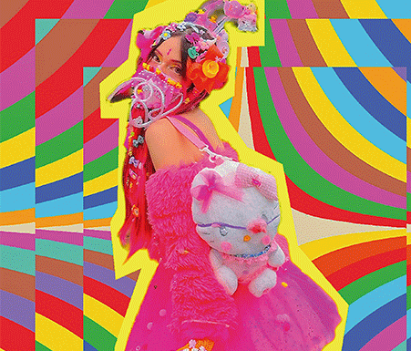
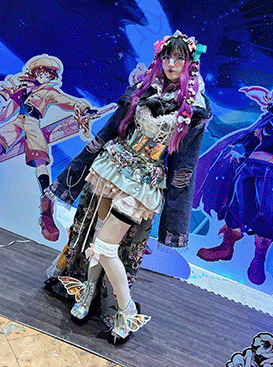
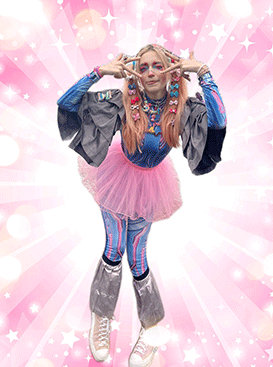
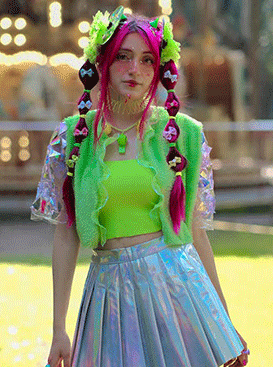
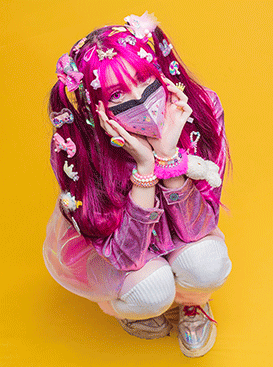
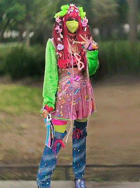
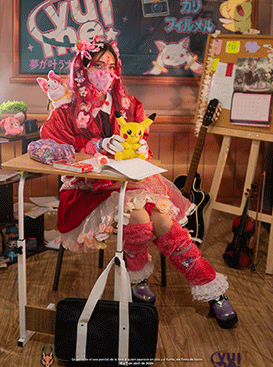
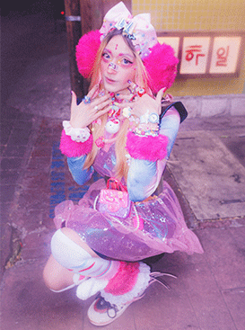
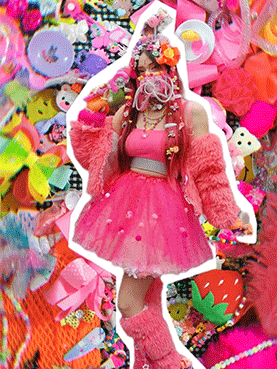
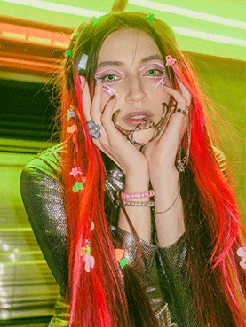

Jellyfish Galaxy
Architect of non-Euclidean voids.
El estilo de **Jellyfish Galaxy** fusiona la sobrecarga de color del *Decora* tradicional japonés con la agresividad técnica del *Cyberpunk*. No se trata solo de acumular accesorios, sino de hackear el espacio público a través del vestuario.
Cada ensamble está meticulosamente diseñado e hilado a mano, incorporando componentes retroiluminados, siluetas sobredimensionadas inspiradas en la mecatrónica de ciencia ficción y un contraste absoluto que rompe por completo con la arquitectura gris de la ciudad.









Sigue la Transmisión Visual
Actualizaciones de outfits, detrás de cámaras en pasarelas de moda alternativa y registros continuos del archivo.